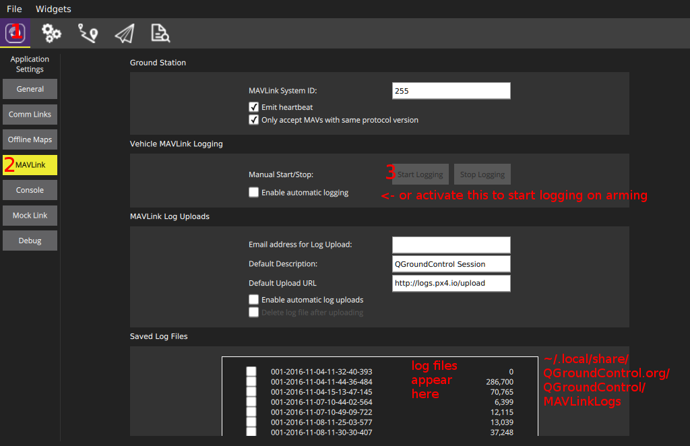

로깅
로거 프로그램은 어떤 ORB 주제에 대해서든 모든 내용을 넣어 기록할 수 있습니다. 결국 우리가 필요한 것은 .msg 파일이기에 토픽 이름만 정하면 됩니다. 추가 주기 매개변수에는 각 토픽별 최대 기록 주기를 지정합니다. 모든 토픽의 실존 인스턴스를 기록합니다.
출력 로그 형식은 ULog 입니다.
사용법
기본적으로, 로깅은 이륙 준비를 마쳤을 때 시작하며, 이륙 준비를 해제할 때 멈춥니다. 매회 이륙 준비 세션당 새 로그 파일은 SD 카드에 만듭니다. 현재 상태를 표시하려면 콘솔에서 logger status명령을 활용하십시오. 로깅을 바로 시작하고 싶다면 logger on 명령을 내리십시오. 이 명령으로 이륙 준비 상태를 마쳤을 때, 그 이전 상태에 관계없이 재개합니다. logger off 명령은 그 반대입니다.
다음 명령을 활용
logger help
하여 모든 지원 로거 명령과 매개변수 목록을 확인하십시오.
설정
SD 카드에 기록할 토픽 목록은 설정 파일로 개별 지정할 수 있습니다. SD 카드에 etc/logging/logger_topics.txt 파일을 만들어 토픽 목록을 넣으십시오(SITL용 파일은 build/px4_sitl_default/tmp/rootfs/fs/microsd/etc/logging/logger_topics.txt입니다).
<topic_name> <interval> <instance>
<interval> 항목은 선택 사항이나, 이 항목은 밀리초 단위로 이 토픽을 기록할 두 로그간의 최소 간격 시간을 지정합니다. 지정하지 않으면, 토픽을 최대 기록율로 기록합니다.
<instance> 항목 역시 선택사항이나, 이 항목은 로그를 진행할 인스턴스를 지정합니다. 지정하지 않으면, 토픽의 모든 인스턴스를 로깅합니다. <instance>를 지정하려면, <interval>을 반드시 지정해야합니다. 0을 설정하여 최대 기록율로 지정할 수 있습니다.
이 파일에 들어간 토픽 목록은 기본 로깅 토픽 종류를 바꿉니다.
예시 :
sensor_accel 0 0
sensor_accel 100 1
sensor_gyro 200
sensor_mag 200 1
이 설정을 통해 sensor_accel 0 을 최대 기록율로, sensor_accel 1을 초당 10회, 모든 sensor_gyro 인스턴스를 초당 5회, sensor_mag 1을 초당 5회 기록합니다.
스크립트
pyulog 저장소에 로깅 파일을 분석하고 변환하는 다양한 스크립트가 있습니다.
손실
로깅 손실은 그다지 반갑지 않은 상황이며, 이에 영향을 주는 몇가지 요인이 있습니다.
- 대부분 우리가 시험해본 SD 카드는 1분 단위로 관찰 했을 때 여러번 멈추었습니다. 이는 기록 명령을 처리함에 있어 수 100ms 정도의 지연이 있음을 보여줍니다. 이런 현상으로 인해 그동안 기록 버퍼가 차면 손실을 유발합니다. (아래와 같이) SD 카드에 따라 영향을 받습니다.
- SD 카드를 포맷하면 손실을 어느정도 예방할 수 있습니다.
- 로그 버퍼 크기를 늘리면 도움이 됩니다.
- 선택한 토픽에 대한 로깅 율을 줄이거나 필요없는 토픽을 로깅 목록에서 제거해보십시오(
info.py가 이 문제 해결에 도움됨).
SD 카드
다음 표에서는 제각기 다른 SD 카드의 성능 측정 결과를 보여줍니다. Pixracer에서 시험을 완료했습니다. 결과는 픽스호크에도 해당합니다.
NuttX의 최대 지원 SD 카드 용량은 32GB(SD 메모리 카드 명세 버전 2.0) 입니다.
| SD 카드 | 평균 시퀀스 기록 속도 [KB/s] | 최대 기록 시간 / 블록 (평균) [ms] |
|---|---|---|
| SanDisk Extreme U3 32GB | 461 | 15 |
| Sandisk Ultra Class 10 8GB | 348 | 40 |
| Sandisk Class 4 8GB | 212 | 60 |
| SanDisk Class 10 32 GB (High Endurance Video Monitoring Card) | 331 | 220 |
| Lexar U1 (Class 10), 16GB High-Performance | 209 | 150 |
| Sandisk Ultra PLUS Class 10 16GB | 196 | 500 |
| Sandisk Pixtor Class 10 16GB | 334 | 250 |
| Sandisk Extreme PLUS Class 10 32GB | 332 | 150 |
평균 기록속도보다 중요한 부분은 블록(4 KB)당 최대 기록 시간입니다. 블록은 최소 버퍼 크기를 정의합니다. 최대치가 커지면 버퍼 내용의 손실을 피하기 위해 더 큰 버퍼가 필요합니다. 기본 토픽 로깅 대역폭은 50 KB/s 이며, 모든 SD 카드에서 소화할 수 있습니다.
무엇보다도 우리가 가장 좋다고 알게된 카드의 모델은 SanDisk Extreme U3 32GB입니다. 순간적으로 증가하는 기록 시간이 없(어 패킷 손실이 없을거라고 생각할 수 있)기에 이 카드를 추천합니다. 다른 카드 용량에 대해서도 비슷하게 잘 동작하지만, 보통 성능이 다릅니다.
sd_bench -r 50 명령으로 SD 카드를 테스트하고 https://github.com/PX4/Firmware/issues/4634 에 결과를 보고할 수 있습니다.
로그 스트리밍
태로초부터 지금까지 제대로 지원하는 로그 스트리밍 방법은 FMU에서 SD 카드를 활용하는 방법입니다. 그러나, 이 대안책으로, MAVLink로 동일한 로깅 데이터를 전송하는 로깅 스트리밍 방식이 있습니다. 이 방식은 FMU에 SD 카드 슬롯이 없을 경우(예: Intel® Aero Ready to Fly 드론)에 활용하거나, 단순히 SD 카드의 취급을 피하려 하고자 할 경우 진행할 수 있습니다. 두가지 방식은 동시에 제각각 활용할 수 있습니다.
필요 요소는 WiFi 연결 처럼 초당 50KB를 제공할 수 있는 통신 수단입니다. 단일 클라이언트만 동시에 로그 스트리밍을 요청할 수 있습니다. 프로토콜에서 손실 패킷을 관리하기에 연결은 굳이 안정적이지 않아도 좋습니다.
ulog 스트리밍을 지원하는 클라이언트는 여러가지가 있습니다.:
- Firmware/Tools의
mavlink_ulog_streaming.py - QGroundControl:
- MAVGCL
진단
- 로그 스트리밍을 시작하지 않았다면,
logger를 실행 중인지(위 참고) 확인하고, 시작하는 동안 콘솔 출력을 살펴보십시오. - 여전히 동작하지 않는다면 MAVLink 2를 사용하고 있는지 확인하십시오.
MAV_PROTO_VER매개변수 값을 2로 강제 설정하십시오. 로그 스트리밍은 MAVLink 전송율 설정(
-r매개변수) 최대값의 70% 전송율을 보입니다. 더 큰 전송율이 필요하다면, 메세지가 사라집니다. 현재 MAVLink 패킷에서 로그가 차지하는 백분율은mavlink status명령으로 확인할 수 있습니다(이 예제에서는 1.8%).instance #0: GCS heartbeat: 160955 us ago mavlink chan: #0 type: GENERIC LINK OR RADIO flow control: OFF rates: tx: 95.781 kB/s txerr: 0.000 kB/s rx: 0.021 kB/s rate mult: 1.000 ULog rate: 1.8% of max 70.0% accepting commands: YES MAVLink version: 2 transport protocol: UDP (14556) 또한txerr값이 0에 머물러있는지 확인하십시오. 만약 이 값이 올라간다면, NuttX 전송 버퍼가 너무 작거나, 물리 링크 대역폭이 포화 상태이거나, 하드웨어가 데이터를 처리하기에 너무 느린 상황임을 의미합니다.